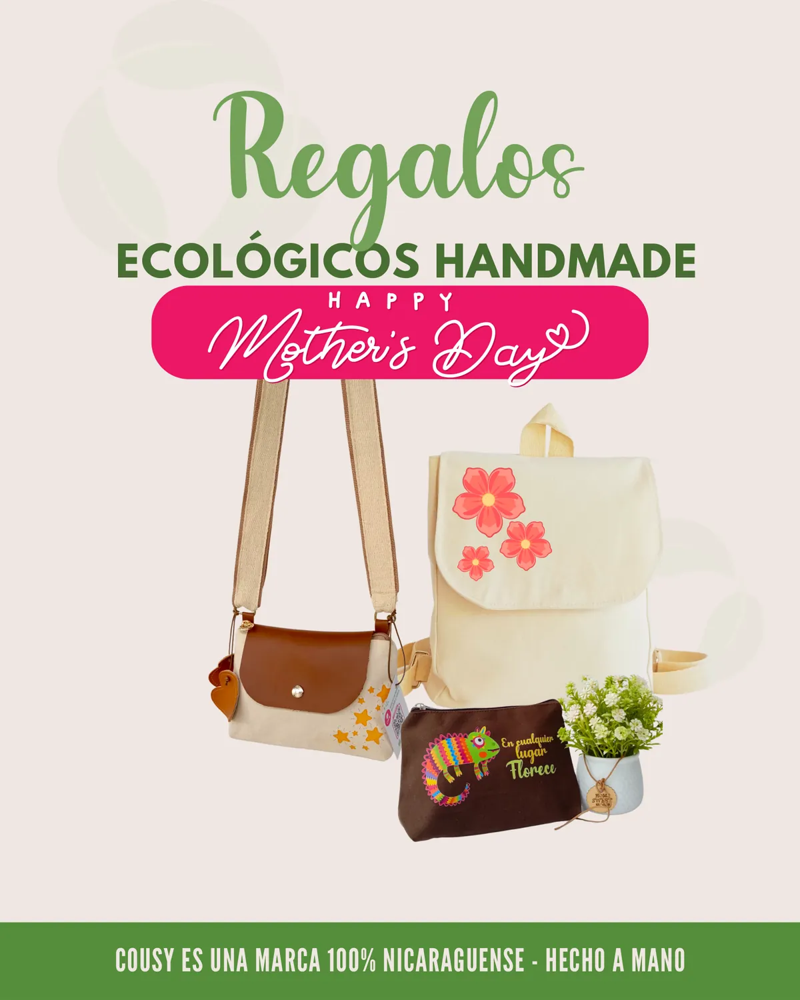
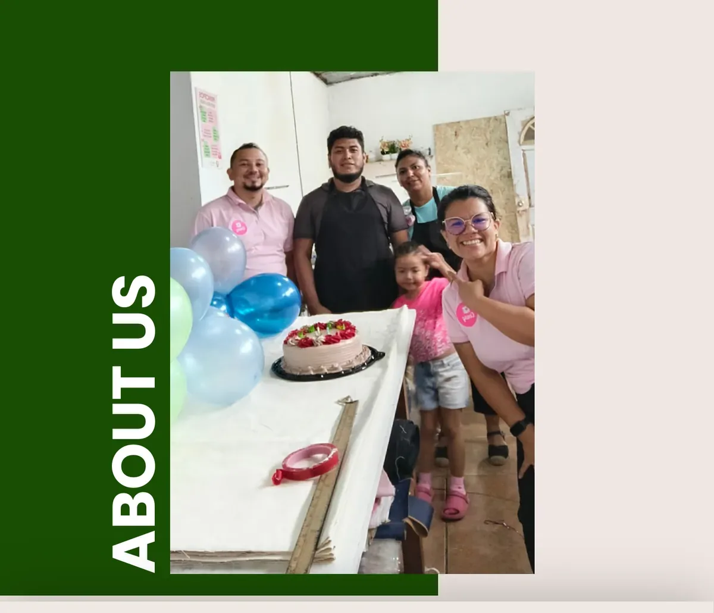
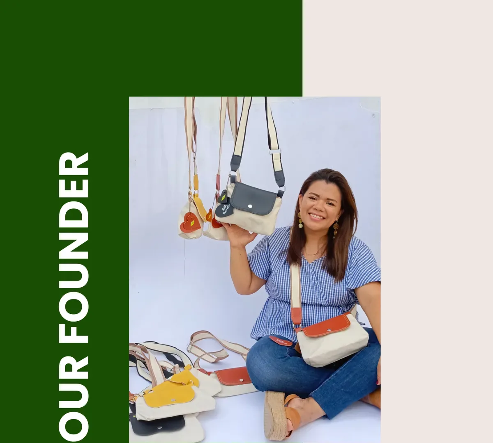
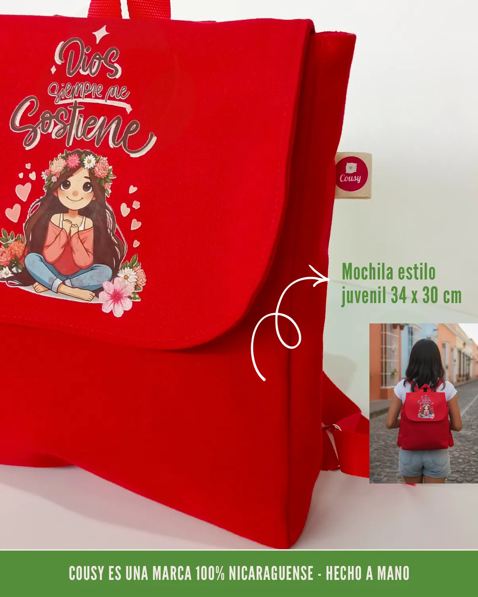
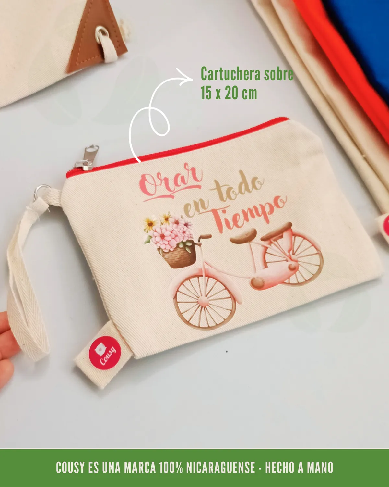
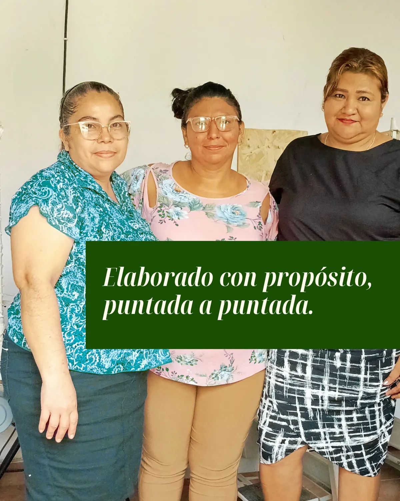

Loto Nicaragua
Necesidad: material promocional para activaciones y campañas comerciales. Solución: producción por lote de bolsos y accesorios personalizados. Resultado: entregas a tiempo por campaña y continuidad de abastecimiento.
En Cousy Nicaragua elaboramos productos textiles de alta calidad, con enfoque sostenible y apoyo a la mano de obra nicaragüense.
Calidad
Hecho a mano
Sostenibilidad
Materiales responsables
Empresas
Regalos corporativos
Casos de éxito B2B
Para proteger acuerdos comerciales, varios proyectos se muestran por sector. Este bloque resume necesidades, solución aplicada y resultado entregado por Cousy.
Loto Nicaragua
Necesidad: material promocional para activaciones y campañas comerciales. Solución: producción por lote de bolsos y accesorios personalizados. Resultado: entregas a tiempo por campaña y continuidad de abastecimiento.
Polaris Renew Energy
Necesidad: kits corporativos para equipo interno y eventos de marca. Solución: desarrollo de piezas textiles personalizadas con lineamientos gráficos consistentes. Resultado: imagen unificada en actividades internas y externas.
CCN (Compañía Cervecera de Nicaragua)
Necesidad: artículos promocionales para iniciativas de trade marketing y temporada. Solución: producción escalable por lote con control de calidad y branding. Resultado: reposición ágil y presencia consistente de marca en punto de venta.
COCESNA
Necesidad: obsequios corporativos funcionales para audiencias institucionales. Solución: diseño y fabricación de piezas textiles personalizadas en lotes programados. Resultado: cumplimiento de cronograma y estándar visual corporativo.
Colección Cousy
Elaborado con propósito, puntada a puntada. Esta colección de Cousy reúne tote bags, mochilas, cosmetiqueras y cartucheras pensadas para empresas que buscan regalos útiles, duraderos y con impacto social positivo en Nicaragua.
Origen
Marca 100% nicaragüense
Materiales
Lona natural, semicuero y cuero local
Enfoque
Regalos corporativos con propósito



About Us
Somos una pequeña fábrica en Nicaragua especializada en regalos personalizados y ecológicos. Elaboramos productos hechos a mano utilizando lona natural, semicuero y cuero de origen local.
Nuestra misión es proteger el medio ambiente mientras creamos oportunidades significativas para personas que buscan construir una mejor calidad de vida para ellas y sus familias.
Our Founder
Nuestra fundadora, de niña trabajó en las calles durante casi diez años, una experiencia que la convirtió en una mujer resiliente, aventurera y emprendedora, con una profunda pasión por construir negocios con propósito que generen un impacto duradero en la vida de las personas.
Hace tres años, fundó Cousy. A pesar de operar en un entorno desafiante, el negocio se mantiene en crecimiento.





